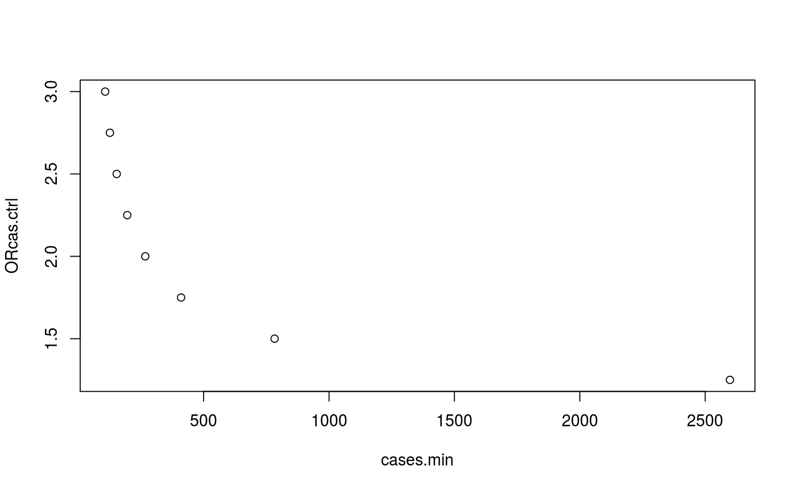

Determine the minimum number of cases (Ncmin), required to detect: either a change from p0 (haplogroup frequency in controls) to p1 (haplogroup frequency in cases), or a given OR, with a predefined confidence interval, in a study with Nh haplogroups.
Note: I assume that case-control equations are valid for cohorts with a balanced number of cases and controls.
This function may not be generalizable for all studies involving mtDNA haplogroups.
mthacases(p0 = p0, Nh = Nh, OR.cas.ctrl = OR.cas.ctrl, power = power, sig.level = sig.level)
| p0 | the frequency of the haplogroup in the control population, (that is, the controls among exposed). It depends on haplogroup baseline frequency. |
|---|---|
| Nh | number of haplogroup categories. Usually 10 haplogroups plus one category for rare haplogroups: |
| OR.cas.ctrl |
|
| power | the power to detect a given OR in my study (usually 80-90). |
| sig.level | the alpha error accepted. Can take 3 possible values: |
Gives the result in a data frame, easy to print in a plot.
1. DC Samuels, AD Carothers, R Horton, PF Chinnery. The Power to Detect Disease Associations with Mitochondrial DNA Haplogroups. AJHG, 2006. 78(4):713-720. DOI:10.1086/502682.
2. Source code: github.com/aurora-mareviv/mthapower.
3. Shiny app: aurora.shinyapps.io/mtDNA_power_calc.
mydata <- mthacases(p0=0.445, Nh=11, OR.cas.ctrl=c(2), power=80, sig.level=0.05) # Baudouin study mydata <- mthacases(p0=0.445, Nh=11, OR.cas.ctrl=c(1.25,1.5,1.75,2,2.25,2.5,2.75,3), power=80, sig.level=0.05) mydata <- mydata[c(2,6)] mydata#> cases.min ORcas.ctrl #> 1 2598.580 1.25 #> 2 782.882 1.50 #> 3 410.041 1.75 #> 4 267.193 2.00 #> 5 195.428 2.25 #> 6 153.394 2.50 #> 7 126.216 2.75 #> 8 107.388 3.00plot(mydata)